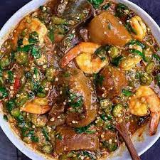

Okro Soup

Description
Okro soup is a very popular and delicious stew that is loved
by the majority of the people, in West Africa
Okra soup is often classically made with beef (beef parts) and fish.
However, shrimps, Lamb Meat, goat meat, or any other meat or fish of
choice can be used.
Ingredients
- 1.5 lb Okra half minced and half sliced
- 1 red bell pepper
- Smoked Turkey wings
- 1 Small onion minced
- 1 habanero pepper
- 3 Tbsp crayfish
- 1/2 lb Spinach
- 1 lb shrimps
- 1 Dry Fish large
- 4 Tbsp Locust bean
- 1/2 to 3/4 cup Palm oil
- 1 Tsp Seasoning powder
- 4 to 5 cups water
Steps
- Boil the Smoked Turkey wings with salt, seasoning powder and minced Onions. Cook till tender.
- While the meat is boiling, mince half of the onions in a food processor or a chopper and slice the other half. Set aside
- Mince the red bell pepper and habanero pepper in the chopper and set aside
- When the meat becomes tender, add the minced pepper, crayfish, and locust bean and leave to cook for about 10 minutes.
- Shred and add the washed dry fish and leave to soften for about five minutes.
- Add the palm oil, shrimps and the minced and sliced okro. Leave to cook for about 3 to 5 minutes.
- Stir in the spinach and mix until wilted.
- Remove from heat immediately and serve.